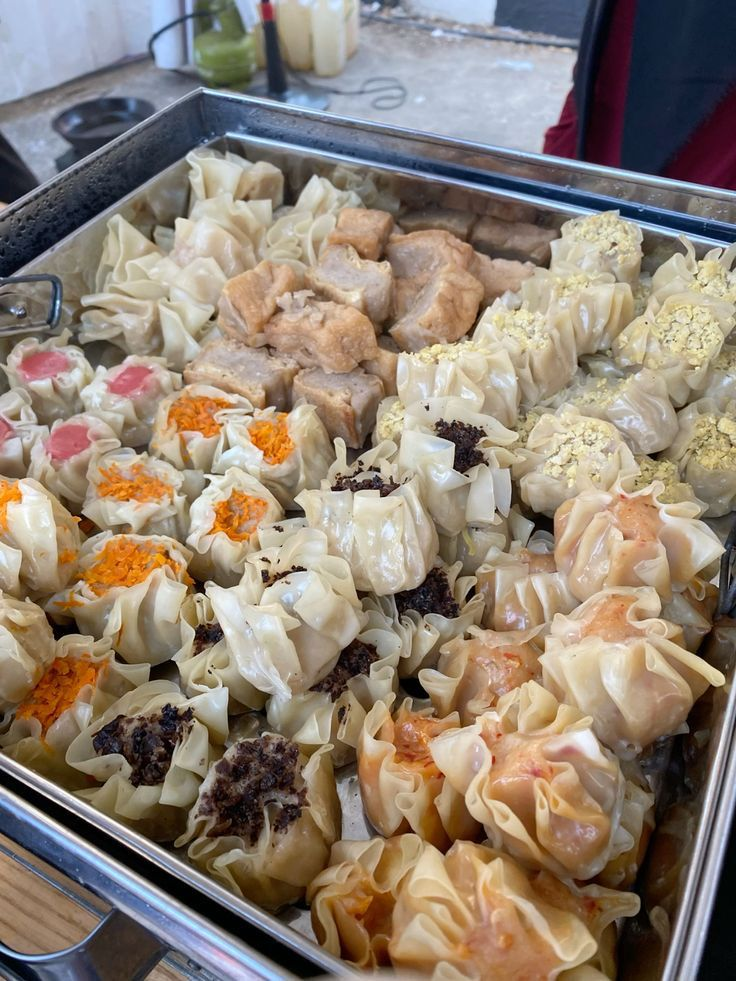
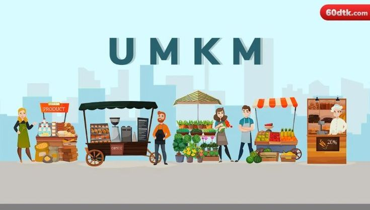

Ekonomi
UMKM Dimsum di Belakang UNS Solo Meningkat

Area kampus sudah biasa menjadi tempat mangkal umkm kuliner yang enak dan murah. Tak terkecuali di area belakang UNS, para penjual menjajakan berbagai jajanan yang enak. Namun, akhir-akhir ini jumlah penjual UMKM dimsum lebih banyak ketimbang jajanan lainnya. Meningkatnya jumlah UMKM dimsum menunjukkan adanya potensi bisnis yang baik di sektor ini.
Dimsum telah menjadi makanan yang populer di berbagai kalangan, karena rasanya yang lezat dan variasi menu yang beragam mulai dari dimsum ori, dimsum mentai, dimsum lava, dan masih banyak lainnya. Selain itu, tren dimsum yang viral di media sosial meningkat sehingga tingkat popularitas semakin luas. Meningkatnya popularitas dimsum, kini peminat dimsum juga meningkat karena dengan tren gaya hidup praktis dan makanan cepat saji, sehingga permintaan akan dimsum juga terus meningkat.
Usaha dimsum dapat dimulai dengan modal yang relatif kecil tanpa melakukan investasi besar dalam peralatan dan infrastruktur. Bahan baku dalam membuat dimsum juga umumnya mudah ditemukan di pasar-pasar atau supermarket. Bahan-bahan seperti daging ayam, udang, sayuran, dan bumbu-bumbu dasar tersedia luas dengan harga yang terjangkau. Hal tersebut memudahkan para UMKM dalam menjaga kualitas dan konsistensi produk mereka. Dengan permintaan yang terus meningkat, modal usaha yang relatif kecil, dan bahan-bahan yang mudah didapatkan menjadi faktor UMKM dimsum di belakang UNS Solo meningkat. Selain itu, lokasi di belakang UNS sangat strategis yaitu mudah dijangkau oleh para mahasiswa karena berdekatan dengan kampus dan kos-kosan, sehingga memungkinkan usaha dimsum banyak peminat.
Ditulis oleh : Siti Munawaroh Haliza
Sumber : https://pin.it/2mpqpMGj5
Potensi UMKM di Solo Raya

Saat ini, Indonesia sedang mengalami kebangkitan usaha mikro kecil dan menengah (UMKM) yang sangat pesat. Tak terkecuali, kini di Solo Raya juga meningkat pesat. Solo Raya dikenal sebagai pusat seni dan budaya di Jawa Tengah. Kota Solo juga terkenal dengan batiknya. Hal tersebut menjadi peluang besar bagi UMKM yang bergerak di bidang kerajinan tangan, pembuatan batik, seni rupa, dan kerajinan tradisional. Wilayah Solo Raya memiliki banyak tempat wisata, seperti Istana Mangkunegaran, Keraton Solo, Taman Balekambang, dll. UMKM di sektor perhotelan, kuliner, dan barang-barang suvenir memiliki peluang besar untuk berkembang. Selain itu, di Kota Solo juga sering mengadakan event terutama di Balaikota Surakarta dan juga di area Gatot Subroto yang membuka peluang para UMKM untuk menggelar usahanya di event-event Solo Raya. Bagi pelaku bisnis UMKM yang ingin mengembangkan usahanya di wilayah Solo, penting untuk melakukan beberapa tips membuka bisnis UMKM. Berikut tips untuk membuka bisnis UMKM bagi pemula sebagaimana dilansir dari beberapa sumber :
Melakukan Riset Pasar. Hal pertama untuk menentukan ide usaha yaitu mengidentifikasi peluang bisnis yang sesuai dengan minat, keahlian, dan permintaan pasar. Jangan hanya terpaku dengan tren, namun juga sesuaikan dengan keahlian dan pengetahuan yang dimiliki. Lakukan riset pasar untuk mengetahui kebutuhan konsumen dan menganalisis pesaing untuk mengidentifikasi peluang. Dari hal tersebut pelaku bisnis dapat menentukan ide usaha yang tepat.
Menyusun Rencana Bisnis. Pelaku usaha harus mempunyai bussiness planner guna memandu usahanya agar bisa berjalan dengan baik. Rencana bisnis yang baik akan merinci berbagai aspek penting, seperti gambaran secara menyeluruh mengenai usaha yang akan dibangun, strategi pemasaran, pengelolaan keuangan, rencana operasional, dll. Rencana bisnis ini akan sangat membantu pelaku UMKM memahami tujuan bisnis, evaluasi bisnis, resiko bisnis, dan dapat mengelola bisnis dari semua aspek.
Membangun Relasi. Membangun relasi sangat penting dalam memulai usaha karena membangun relasi dapat membuka pintu peluang, memberikan dukungan, dan memperluas jaringan bisnis. Relasi yang baik dapat membantu dalam berbagai aspek, muli dari mendapatkan ide dan saran, menemukan mentor, hingga mempercepat pertumbuhan bisnis.
Mempersiapkan Modal. Modal merupakan hal yang sangat penting untuk memulai bisnis. Sebelum memulai bisnis, pelaku bisnis harus sudah memikirkan dan juga menyiapkan modal usaha yang akan dibangun. Memulai usaha tidak harus dengan modal yang besar, tetapi modal menyesuaikan bisnis/usaha yang akan dibangun dari riset dan survey yang sudah dilakukan.
Menentukan Lokasi Strategis. Menentukan lokasi juga sangat penting dalam membuka usaha. Lokasi yang strategis yaitu lokasi yang dapat menghasilkan mobilitas dan kegiatan jual beli tinggi. Dengan lokasi yang strategis tingkat penjualan juga akan meningkat.
Menjadi seorang wirausahawan dapat dimulai dari membuka UMKM yang nantinya dapat membuka lahan pekerjaan baru bagi orang lain. Tidak perlu takut dalam memulai sebuah bisnis, namun dengan perencanaan yang matang, kerja keras, dan juga pantang menyerah, merintis UMKM di Solo Raya dapat menjadi langkah awal menuju kesuksesan